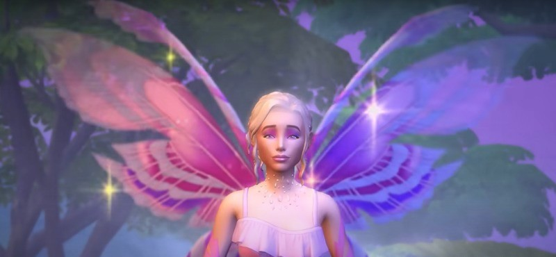
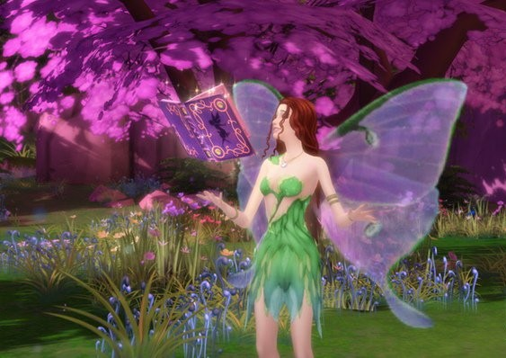
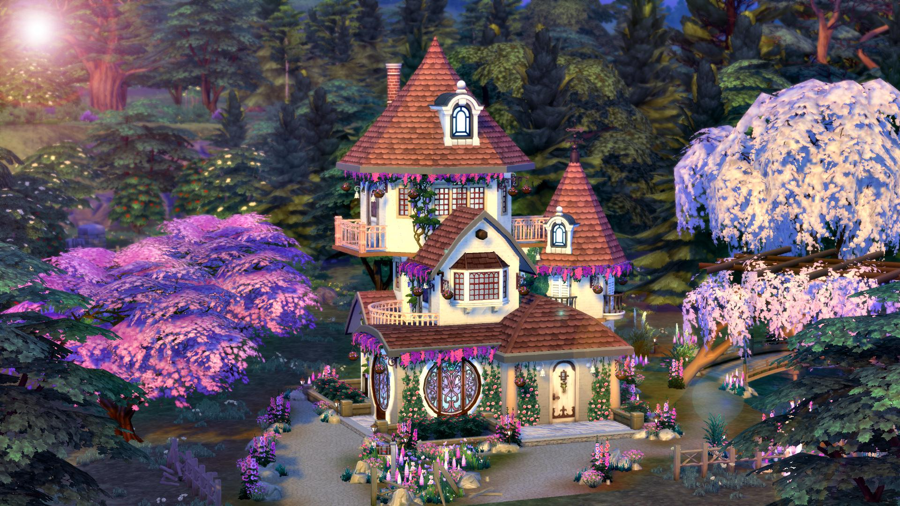

Мир фей
Феи - это новый оккультный тип симов, который привносит в игру магию и волшебство. Эти маленькие существа обладают уникальными способностями и характером.

Способность летать
Феи могут летать, что позволяет им быстро перемещаться и избегать препятствий.

Магические способности
Каждая фея обладает уникальными магическими способностями, которые можно развивать.

Домики фей
Феи могут жить в специальных волшебных домиках, спрятанных в лесах и садах.
Типы фей
В игре представлены несколько типов фей, каждый со своими особенностями:
- Феи природы: Связаны с растениями и животными
- Светлые феи: Несут добро и помогают другим
- Тёмные феи: Любят шалости и могут быть вредными
- Феи стихий: Контролируют огонь, воду, воздух и землю